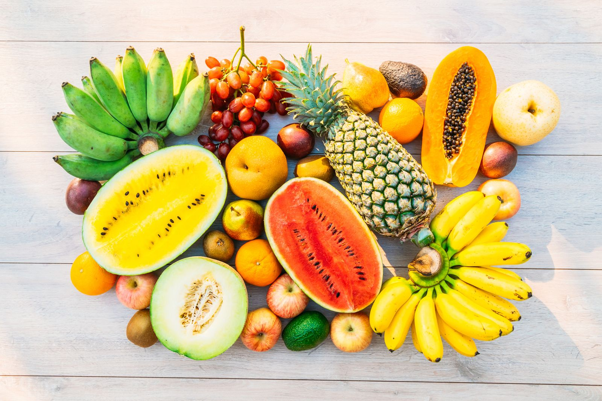
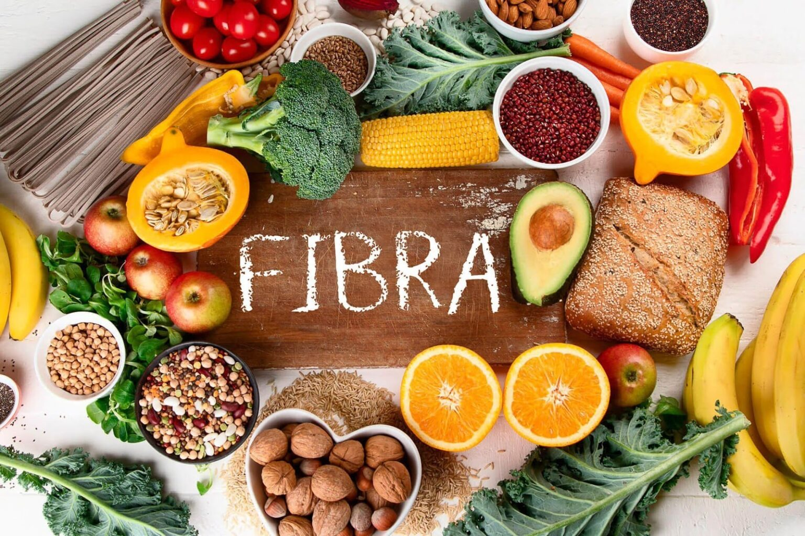
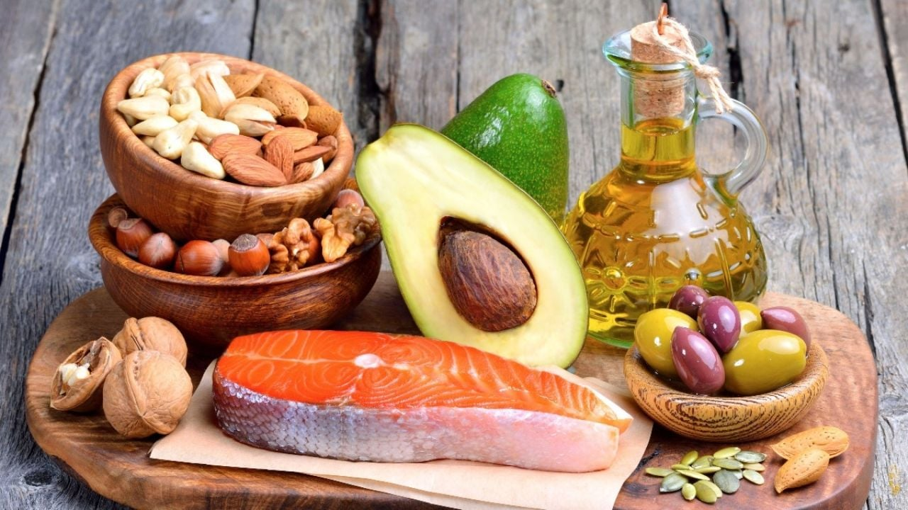

Las frutas y verduras son ricas en vitaminas, minerales y fibra, lo que ayuda a reducir los niveles de colesterol malo (LDL). Además, contribuyen a mantener una buena salud cardiovascular y a prevenir enfermedades del corazón.

Los alimentos ricos en fibra, como la avena, los frijoles y los cereales integrales, ayudan a disminuir la absorción del colesterol en el organismo. Consumirlos regularmente favorece una alimentación saludable y equilibrada.

Las grasas saludables, presentes en alimentos como el aguacate, las nueces y el aceite de oliva, ayudan a aumentar el colesterol bueno (HDL) y a proteger el corazón. Es importante consumirlas con moderación y evitar las grasas saturadas y trans.
